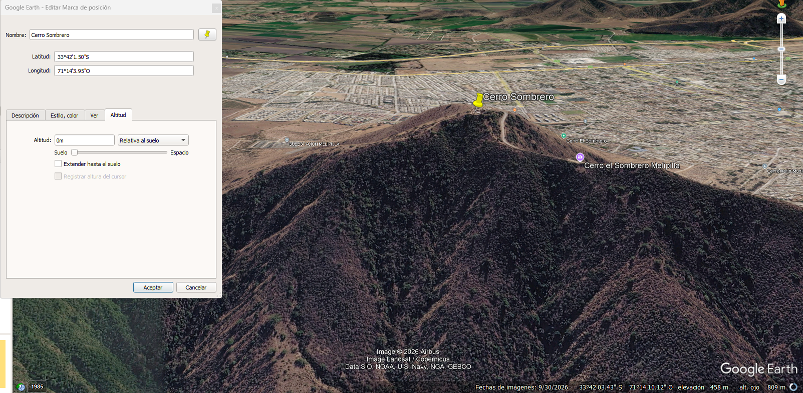

Capítulo 02 · Módulo 03
Trazar con Google Earth Pro.
Guardar los extremos y observar el relieve antes de evaluar la radio.
Preparar el proyecto
Trabaja con Earth Pro de escritorio para seguir esta ruta. Parte de la propuesta inicial de UISP. Crea una carpeta del caso en Sitios y añade dos marcadores, A y B, en los puntos reales de instalación. Revisa sus coordenadas y el sistema de unidades; conserva nombres idénticos para las otras herramientas.
Altitud relativa al suelo
En las propiedades de cada marcador, abre Altitud y utiliza preferentemente Relativa al suelo. Así el valor expresa metros sobre el terreno local. Para marcar el sitio en el suelo, deja 0 m; para representar la antena del escenario, utiliza 15 m sobre el suelo y distingue ese marcador del punto base.
El marcador a 0 m no significa que el cerro esté al nivel del mar ni que la antena se vaya a instalar en el suelo. Mantendremos separadas la elevación del terreno y la altura de antena. Si representas la antena a 15 m en Earth Pro, en un campo de altura sobre el suelo de Radio Mobile sigues introduciendo 15 m: no los sumes dos veces.
Marcador real · Cerro Sombrero
| Campo | Dato del marcador |
|---|---|
| Nombre | Cerro Sombrero |
| Latitud | 33°42′1.50″ S |
| Longitud | 71°14′3.95″ O |
| Grados decimales, aproximados | Latitud: -33.7004167 · Longitud: -71.2344306 |
| Modo y altitud del marcador | Relativa al suelo · 0 m |
| Altura de antena del escenario | 15 m sobre el terreno, registrada por separado. |

Las coordenadas de Cerro Sombrero ya están disponibles. Falta registrar el marcador de Codigua con sus coordenadas completas y comprobar la distancia entre ambos. La conversión a decimales está redondeada y utiliza signo negativo para sur y oeste.
Dibujar la traza
- Ubica A y B con marcadores, sin adivinar su posición desde una imagen alejada.
- Utiliza Regla para medir el trayecto directo entre ambos y guarda la medición como ruta.
- Abre el perfil de elevación de la ruta. Revisa la distancia horizontal y la elevación del terreno a lo largo del recorrido.
- Registra las lomas y las zonas donde debas comprobar árboles o edificaciones.
- Guarda el conjunto mediante Guardar sitio como, en KML o KMZ según las opciones de tu versión.
En Cerro Sombrero, confirma el punto más alto elegido para el ejercicio y el lugar donde podría instalarse la antena. En Codigua, fija el sitio concreto. Transcribe las coordenadas completas con su formato y hemisferio; no las deduzcas de campos recortados.
Qué debes entregar
Los marcadores, la ruta, las coordenadas, una distancia con unidades y una captura del perfil. Añade las alturas de instalación propuestas en tu ficha, no como si fueran automáticamente la elevación del suelo.
Capturas para este módulo
- Vista de la traza: cerro Sombrero y Codigua. Contrasta la distancia con los 17,98 km mostrados en el escenario oficial de UISP, sin mover puntos solo para igualar la cifra.
- Perfil de elevación: el recorrido completo con ejes, distancias, elevaciones y unidades legibles.
Conserva también el KML/KMZ si puedes compartirlo. Ya tenemos la captura del marcador Cerro Sombrero; faltan la de Codigua, la vista de ambos extremos y el perfil. Incorporaremos esas capturas reales cuando estén disponibles.
Ayuda oficial: distancias y perfil · guardar sitios · altitud de los marcadores.